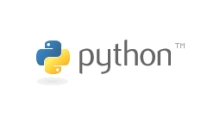
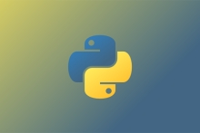
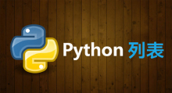

PYTHON
自从20世纪90年代初Python语言诞生至今，它已被逐渐广泛应用于系统管理任务的处理和Web编程。
Python的创始人为荷兰人吉多·范罗苏姆 [6]（Guido van Rossum）。1989年圣诞节期间，在阿姆斯特丹，Guido为了打发圣诞节的无趣，决心开发一个新的脚本解释程序，作为ABC语言的一种继承。之所以选中Python（大蟒蛇的意思）作为该编程语言的名字，是取自英国20世纪70年代首播的电视喜剧《蒙提·派森的飞行马戏团》（Monty Python's Flying Circus）。
ABC是由Guido参加设计的一种教学语言。就Guido本人看来，ABC这种语言非常优美和强大，是专门为非专业程序员设计的。但是ABC语言并没有成功，究其原因，Guido认为是其非开放造成的。Guido决心在Python中避免这一错误。同时，他还想实现在ABC中闪现过但未曾实现的东西。
就这样，Python在Guido手中诞生了。可以说，Python是从ABC发展起来，主要受到了Modula-3（另一种相当优美且强大的语言，为小型团体所设计的）的影响。并且结合了Unix shell和C的习惯。
Python [7] 已经成为最受欢迎的程序设计语言之一。自从2004年以后，python的使用率呈线性增长。Python 2于2000年10月16日发布，稳定版本是Python 2.7。Python 3于2008年12月3日发布，不完全兼容Python 2。 [6] 2011年1月，它被TIOBE编程语言排行榜评为2010年度语言。 [8]
由于Python语言的简洁性、易读性以及可扩展性，在国外用Python做科学计算的研究机构日益增多，一些知名大学已经采用Python来教授程序设计课程。例如卡耐基梅隆大学的编程基础、麻省理工学院的计算机科学及编程导论就使用Python语言讲授。众多开源的科学计算软件包都提供了Python的调用接口，例如著名的计算机视觉库OpenCV、三维可视化库VTK、医学图像处理库ITK。而Python专用的科学计算扩展库就更多了，例如如下3个十分经典的科学计算扩展库：NumPy、SciPy和matplotlib，它们分别为Python提供了快速数组处理、数值运算以及绘图功能。因此Python语言及其众多的扩展库所构成的开发环境十分适合工程技术、科研人员处理实验数据、制作图表，甚至开发科学计算应用程序。2018年3月，该语言作者在邮件列表上宣布Python 2.7将于2020年1月1日终止支持。用户如果想要在这个日期之后继续得到与Python 2.7有关的支持，则需要付费给商业供应商。 [9]
下载安装
在您开始之前，你的计算机需要Python，但您可能不需要下载它。首先检查(在同级目录下在命令行窗口输入python)有没有安装Python。如果你看到了一个Python解释器的响应，那么就能在它的显示窗口中得到一个版本号。通常的版本都可以做到Python的向前兼容。
如果您需要安装， 您不妨下载最近稳定的版本。 就是那个以没有被标记作为alpha或Beta发行的最高的版本。目前最稳定的版本是Python3.0以上 [10]
如果你使用的操作系统是Windows：当前最稳定的Windows版本下载是"Python 3.9.0 for Windows"
如果你使用的是Mac，MacOS 10.2 (Jaguar), 10.3 (Panther) and 10.4 (Tiger)已经集成安装了Python，但是你大概需要安装最近通用的构架(build)。
对于Red Hat，安装python2和python2-devel包。
对于Debian，安装python2.5和python2.5-dev包。
语言特点
风格
Python在设计上坚持了清晰划一的风格，这使得Python成为一门易读、易维护，并且被大量用户所欢迎的、用途广泛的语言。
设计者开发时总的指导思想是，对于一个特定的问题，只要有一种最好的方法来解决就好了。这在由Tim Peters写的Python格言（称为The Zen of Python）里面表述为：There should be one-- and preferably only one --obvious way to do it. 这正好和Perl语言（另一种功能类似的高级动态语言）的中心思想TMTOWTDI（There's More Than One Way To Do It）完全相反。
Python的作者有意的设计限制性很强的语法，使得不好的编程习惯（例如if语句的下一行不向右缩进）都不能通过编译。其中很重要的一项就是Python的缩进规则。
一个和其他大多数语言（如C）的区别就是，一个模块的界限，完全是由每行的首字符在这一行的位置来决定的（而C语言是用一对花括号{}来明确的定出模块的边界的，与字符的位置毫无关系）。这一点曾经引起过争议。因为自从C这类的语言诞生后，语言的语法含义与字符的排列方式分离开来，曾经被认为是一种程序语言的进步。不过不可否认的是，通过强制程序员们缩进（包括if，for和函数定义等所有需要使用模块的地方），Python确实使得程序更加清晰和美观。
与MATLAB
说起科学计算，首先会被提到的可能是MATLAB。然而除了MATLAB的一些专业性很强的工具箱还无法被替代之外，MATLAB的大部分常用功能都可以在Python世界中找到相应的扩展库。和MATLAB相比，用Python做科学计算有如下优点：
● 首先，MATLAB是一款商用软件，并且价格不菲。而Python完全免费，众多开源的科学计算库都提供了Python的调用接口。用户可以在任何计算机上免费安装Python及其绝大多数扩展库。
● 其次，与MATLAB相比，Python是一门更易学、更严谨的程序设计语言。它能让用户编写出更易读、易维护的代码。
● 最后，MATLAB主要专注于工程和科学计算。然而即使在计算领域，也经常会遇到文件管理、界面设计、网络通信等各种需求。而Python有着丰富的扩展库，可以轻易完成各种高级任务，开发者可以用Python实现完整应用程序所需的各种功能。
设计定位
Python的设计哲学是“优雅”、“明确”、“简单”。因此，Perl语言中“总是有多种方法来做同一件事”的理念在Python开发者中通常是难以忍受的。Python开发者的哲学是“用一种方法，最好是只有一种方法来做一件事”。在设计Python语言时，如果面临多种选择，Python开发者一般会拒绝花俏的语法，而选择明确的没有或者很少有歧义的语法。由于这种设计观念的差异，Python源代码通常被认为比Perl具备更好的可读性，并且能够支撑大规模的软件开发。这些准则被称为Python格言。在Python解释器内运行import this可以获得完整的列表。
Python开发人员尽量避开不成熟或者不重要的优化。一些针对非重要部位的加快运行速度的补丁通常不会被合并到Python内。所以很多人认为Python很慢。不过，根据二八定律，大多数程序对速度要求不高。在某些对运行速度要求很高的情况，Python设计师倾向于使用JIT技术，或者用使用C/C++语言改写这部分程序。可用的JIT技术是PyPy。
Python是完全面向对象的语言。函数、模块、数字、字符串都是对象。并且完全支持继承、重载、派生、多继承，有益于增强源代码的复用性。Python支持重载运算符和动态类型。相对于Lisp这种传统的函数式编程语言，Python对函数式设计只提供了有限的支持。有两个标准库(functools, itertools)提供了Haskell和Standard ML中久经考验的函数式程序设计工具。
虽然Python可能被粗略地分类为“脚本语言”（script language），但实际上一些大规模软件开发计划例如Zope、Mnet及BitTorrent，Google也广泛地使用它。Python的支持者较喜欢称它为一种高级动态编程语言，原因是“脚本语言”泛指仅作简单程序设计任务的语言，如shellscript、VBScript等只能处理简单任务的编程语言，并不能与Python相提并论。
Python本身被设计为可扩充的。并非所有的特性和功能都集成到语言核心。Python提供了丰富的API和工具，以便程序员能够轻松地使用C语言、C++、Cython来编写扩充模块。Python编译器本身也可以被集成到其它需要脚本语言的程序内。因此，很多人还把Python作为一种“胶水语言”（glue language）使用。使用Python将其他语言编写的程序进行集成和封装。在Google内部的很多项目，例如Google Engine使用C++编写性能要求极高的部分，然后用Python或Java/Go调用相应的模块。《Python技术手册》的作者马特利（Alex Martelli）说：“这很难讲，不过，2004 年，Python 已在Google 内部使用，Google 召募许多 Python 高手，但在这之前就已决定使用Python，他们的目的是 Python where we can, C++ where we must，在操控硬件的场合使用C++，在快速开发时候使用 Python。”
执行
Python
Python在执行时，首先会将.py文件中的源代码编译成Python的byte code（字节码），然后再由Python Virtual Machine（Python虚拟机）来执行这些编译好的byte code。这种机制的基本思想跟Java，.NET是一致的。然而，Python Virtual Machine与Java或.NET的Virtual Machine不同的是，Python的Virtual Machine是一种更高级的Virtual Machine。这里的高级并不是通常意义上的高级，不是说Python的Virtual Machine比Java或.NET的功能更强大，而是说和Java 或.NET相比，Python的Virtual Machine距离真实机器的距离更远。或者可以这么说，Python的Virtual Machine是一种抽象层次更高的Virtual Machine。基于C的Python编译出的字节码文件，通常是.pyc格式。除此之外，Python还可以以交互模式运行，比如主流操作系统Unix/Linux、Mac、Windows都可以直接在命令模式下直接运行Python交互环境。直接下达操作指令即可实现交互操作。
基本语法
Python
Python的设计目标之一是让代码具备高度的可阅读性。它设计时尽量使用其它语言经常使用的标点符号和英文单字，让代码看起来整洁美观。它不像其他的静态语言如C、Pascal那样需要重复书写声明语句，也不像它们的语法那样经常有特殊情况和意外。
Python开发者有意让违反了缩进规则的程序不能通过编译，以此来强制程序员养成良好的编程习惯。并且Python语言利用缩进表示语句块的开始和退出（Off-side规则），而非使用花括号或者某种关键字。增加缩进表示语句块的开始，而减少缩进则表示语句块的退出。缩进成为了语法的一部分。例如if语句：python3
|
age = int(input("请输入你的年龄: ")) |
根据PEP的规定，必须使用4个空格来表示每级缩进。使用Tab字符和其它数目的空格虽然都可以编译通过，但不符合编码规范。支持Tab字符和其它数目的空格仅仅是为兼容很旧的的Python程序和某些有问题的编辑程序。
控制语句
if语句，当条件成立时运行语句块。经常与else, elif(相当于else if) 配合使用。
for语句，遍历列表、字符串、字典、集合等迭代器，依次处理迭代器中的每个元素。
while语句，当条件为真时，循环运行语句块。
try语句，与except,finally配合使用处理在程序运行中出现的异常情况。
class语句，用于定义类型。
def语句，用于定义函数和类型的方法。
pass语句，表示此行为空，不运行任何操作。
assert语句，用于程序调试阶段时测试运行条件是否满足。
with语句，Python2.6以后定义的语法，在一个场景中运行语句块。比如，运行语句块前加密，然后在语句块运行退出后解密。
yield语句，在迭代器函数内使用，用于返回一个元素。自从Python 2.5版本以后。这个语句变成一个运算符。
raise语句，制造一个错误。
import语句，导入一个模块或包。
from … import语句，从包导入模块或从模块导入某个对象。
import … as语句，将导入的对象赋值给一个变量。
in语句，判断一个对象是否在一个字符串/列表/元组里。
表达式
Python的表达式写法与C/C++类似。只是在某些写法有所差别。
主要的算术运算符与C/C++类似。+, -, *, /, //, **, ~, %分别表示加法或者取正、减法或者取负、乘法、除法、整除、乘方、取补、取余。
Python使用and, or, not表示逻辑运算。
is, is not用于比较两个变量是否是同一个对象。in, not in用于判断一个对象是否属于另外一个对象。
Python支持“列表推导式”（list comprehension），比如计算0-9的平方和:
1 2 |
>>> sum(x * x for x in range(10)) |
Python使用lambda表示匿名函数。匿名函数体只能是表达式。比如：
1 2 3 |
>>> add=lambda x, y : x + y |
Python使用y if cond else x表示条件表达式。意思是当cond为真时，表达式的值为y，否则表达式的值为x。相当于C++和Java里的cond?y:x。
Python区分列表(list)和元组(tuple)两种类型。list的写法是[1,2,3]，而tuple的写法是(1,2,3)。可以改变list中的元素，而不能改变tuple。在某些情况下，tuple的括号可以省略。tuple对于赋值语句有特殊的处理。因此，可以同时赋值给多个变量，比如：
1 |
>>> x, y=1,2 # 同时给x,y赋值，最终结果：x=1, y=2 |
特别地，可以使用以下这种形式来交换两个变量的值：
1 |
>>> x, y=y, x #最终结果：y=1, x=2 |
Python使用'(单引号)和"(双引号)来表示字符串。与Perl、Unix Shell语言或者Ruby、Groovy等语言不一样，两种符号作用相同。一般地，如果字符串中出现了双引号，就使用单引号来表示字符串;反之则使用双引号。如果都没有出现，就依个人喜好选择。出现在字符串中的\(反斜杠)被解释为特殊字符，比如\n表示换行符。表达式前加r指示Python不解释字符串中出现的\。这种写法通常用于编写正则表达式或者Windows文件路径。
Python支持列表切割(list slices)，可以取得完整列表的一部分。支持切割操作的类型有str, bytes, list, tuple等。它的语法是...[left:right]或者...[left:right:stride]。假定nums变量的值是[1, 3, 5, 7, 8, 13, 20]，那么下面几个语句为真：
nums[2:5] == [5, 7, 8] 从下标为2的元素切割到下标为5的元素，但不包含下标为5的元素。
nums[1:] == [3, 5, 7, 8, 13, 20] 切割到最后一个元素。
nums[:-3] == [1, 3, 5, 7] 从最开始的元素一直切割到倒数第3个元素。
nums[:] == [1, 3, 5, 7, 8, 13, 20] 返回所有元素。改变新的列表不会影响到nums。
nums[1:5:2] == [3, 7] 从下标为1的元素切割到下标为5的元素，且步长为2。
函数
Python的函数支持递归、默认参数值、可变参数，但不支持函数重载。为了增强代码的可读性，可以在函数后书写“文档字符串”(Documentation Strings，或者简称docstrings)，用于解释函数的作用、参数的类型与意义、返回值类型与取值范围等。可以使用内置函数help()打印出函数的使用帮助。比如：
>>> def randint(a, b):
... "Return random integer in range [a, b], including both end points."...
>>> help(randint)
Help on function randint in module __main__:
randint(a, b)
Return random integer inrange[a, b], including both end points.